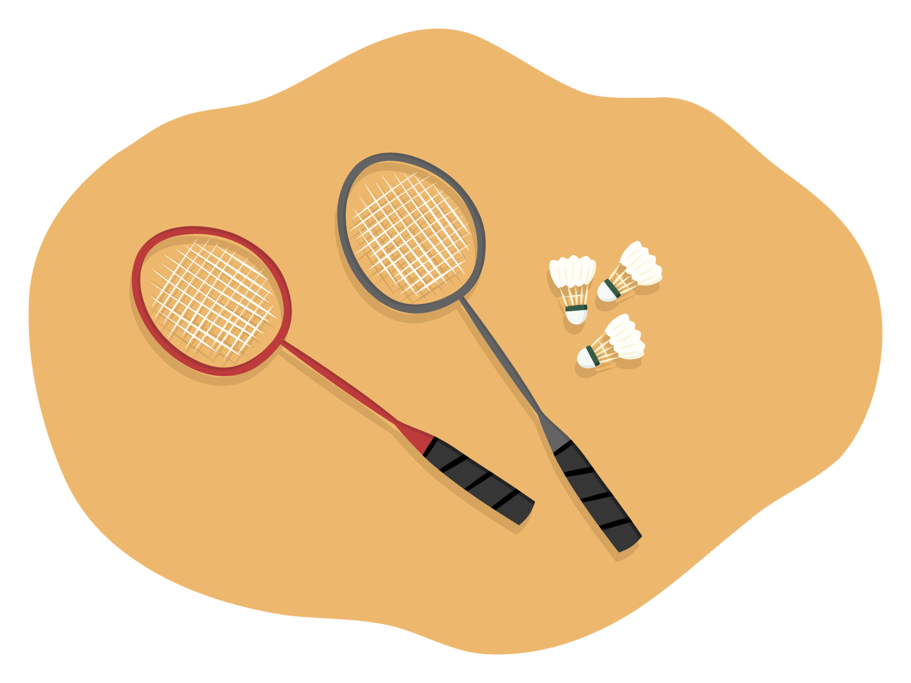
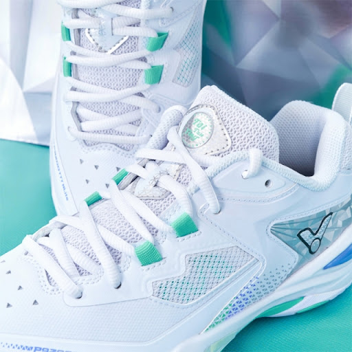
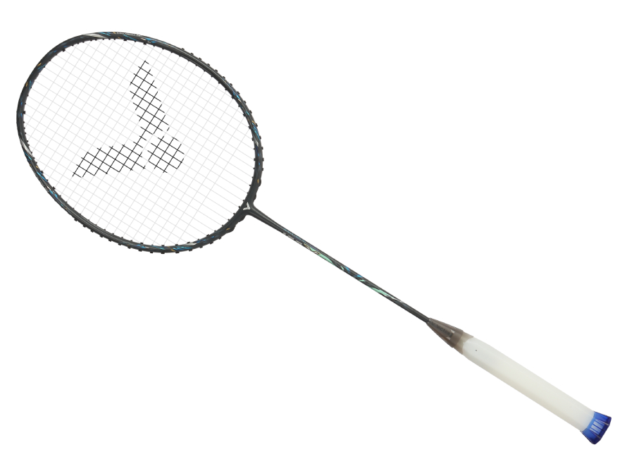
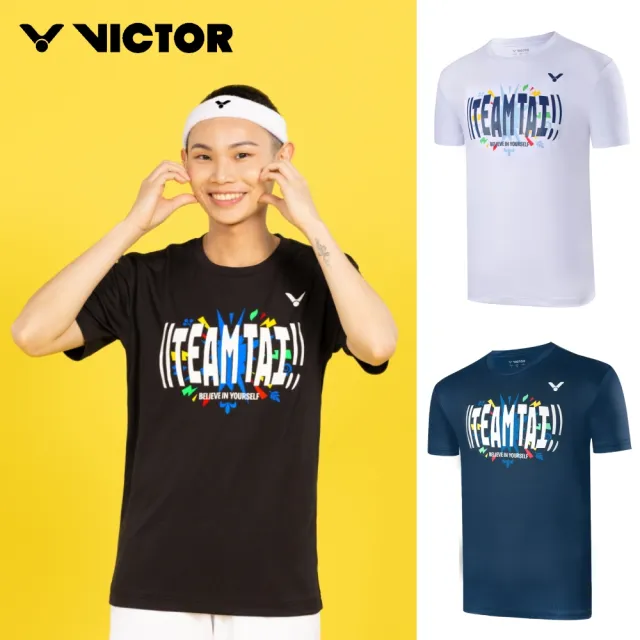

球拍、球鞋、服裝
裝備介紹

踏入羽球世界，不需要繁複的裝備，但選擇合適的裝備卻能大幅提升你的運動體驗。首先，一雙羽球鞋是最關鍵的投資。羽球是一項需要快速起動、頻繁變向的運動，好的羽球鞋能提供穩定支撐、防滑與避震效果，降低受傷風險。接著是球拍，對初學者來說，選擇一支重量適中、握感舒適的球拍，有助於學習正確的擊球方式與控制技巧。再來，運動服裝則建議選擇輕盈透氣、排汗效果佳的材質，讓你在激烈對戰中保持乾爽與舒適。除了基本裝備外，毛巾、水壺、防護配件（如護膝、護腕）也是實用的小物，幫助你更安心地投入每一次揮拍。準備好這些裝備，就能無後顧之憂地投入羽球的樂趣之中，感受速度與技巧交織的熱血運動魅力。
step1

止滑
穩定支撐
羽球鞋是預防運動傷害的第一道防線，對於羽球這類需頻繁起跳、急停、側移的運動來說，更是不可或缺。
專業羽球鞋具備良好的止滑性、包覆性與避震設計，能在快速移動時提供穩定支撐，有效減少腳踝扭傷或膝蓋負擔的風險。與一般運動鞋不同，羽球鞋特別針對場地材質與運動節奏設計，穿上合適的鞋款，不僅提升表現，也能長時間保持舒適。若沒有選擇對的鞋子，長期下來容易造成足底筋膜炎、關節磨損等問題。
step2
選擇一把適合自己的羽球拍，是踏入羽球世界的重要一步。球拍不僅是工具，更是與你並肩作戰的夥伴。
建議選擇拿起來順手、顏色喜歡的款式，提升打球的動力與手感。如果你不確定該怎麼挑選，不妨走一趟專業的羽球店，讓店員依照你的體型、力道與打法給予建議。
球拍上的「幾U」是指重量單位，數字越小代表越重，例如3U比4U重，適合力量較強或攻擊型選手；而4U則較輕盈，適合初學者或注重速度與靈活性的人。挑對球拍，不只提升表現，也讓你更享受每一次的揮拍與擊球。
適合自己
喜歡款式

step3

彈性良好
排汗快乾
一套透氣舒適的運動服，能讓你在打羽球時保持輕鬆與自在。羽球是一項高強度、活動量大的運動，容易流汗。
建議選擇排汗快乾、彈性良好的運動材質，讓汗水迅速蒸發，保持身體乾爽，提升活動的舒適度與靈活性。
揮拍出擊 羽你一起